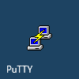
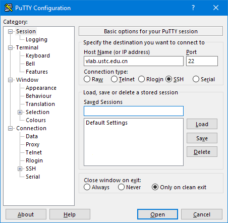

Windows 系统登录虚拟机¶
命令行：使用 SSH 登录¶
Windows 需要安装 SSH 客户端，有各种选择：
- PuTTY (官方下载)
- XShell (官方下载)
- Termius (官方下载，另有 Windows 10 应用商店版)
另外，Windows 平台有各种 Linux / Unix 环境模拟软件，例如
- Git Bash (MSYS2)
- Cygwin
- Windows Subsystem for Linux
对于以上平台，请参考 Linux 系统的登录方式
下面以免费开源的 PuTTY 为例在 Windows 上连接 Vlab 虚拟机。
PuTTY 登录¶
安装过程很简单，直接 [下一步] 到底即可。安装完成后，找到并打开 PuTTY，如图

在 Host name 一栏填入 vlab.ustc.edu.cn，端口号填写 22（这是默认值），点击连接，如图：

第一次连接时会提示你选择信任 Vlab 统一登录平台，点 Yes 即可：

然后 PuTTY 会要求你输入用户名和密码，用户名输入 root 或 ubuntu 或 vlab（参见镜像配置），然后根据提示输入你的 Vlab 用户名和密码（输入的密码没有回显），按回车即可：

用户名密码是什么？
Vlab username 是你的学号（或工号），在登录虚拟机管理页面后可以在右上角看到。
Vlab password 是 Vlab 平台的登录密码，不是虚拟机的 root 密码。还没设置？
登录成功后即可使用虚拟机，如图：

PuTTY 还有一些高级的使用方法，例如你可以保存这些连接信息，以后可以更方便地连接虚拟机。这里有两篇不错的使用教程：
- https://www.hostarr.com/putty-tutorial/
- https://www.cnblogs.com/yuwentao/archive/2013/01/06/2846953.html
使用公钥登录虚拟机¶
使用公钥登录虚拟机可以免除每次输入密码的麻烦。
生成 SSH 密钥对并下载到本地¶
进入虚拟机管理界面，可以在自己虚拟机下方找到 SSH 密钥管理入口：

点击进入，即可通过点击 [生成新的 SSH 密钥对] 生成 SSH 密钥对：

此时公钥已经存储到自己的虚拟机上，只需要下载私钥并做一些配置就能利用密钥对进行免密登录。
点击 下载私钥 就能在下载文件中找到一个以 .pem 结尾的文件，这就是对应的 SSH 私钥。请妥善保管它，因为任何获得这个文件的人都能够登录你的虚拟机。
由于技术限制，每个虚拟机的私钥都是独立的。若你删除并重新创建了虚拟机，你需要重新生成密钥对才能使用密钥登录新的虚拟机。
将 .pem 格式的私钥转换为 .ppk 格式¶
由于 PuTTY 使用的私钥格式为其专用的 .ppk 格式，而不是更为通用的 PEM 格式，所以我们还要进行一步转换。
转换私钥格式需要用到 PuTTYgen，即 PuTTY 的密钥生成与转换工具。一般在安装 PuTTY 时已包含它，如果你安装的 PuTTY 中未包含这个工具，请在这个页面直接下载 puttygen.exe。
在开始菜单的 PuTTY 文件夹下，或者 PuTTY 的安装目录下就能找到 PuTTYgen，打开后可以看到如下界面：

点击 Load 找到刚刚下载的 .pem 文件打开，然后点击 Save private key，选择一个合适目录保存生成的 .ppk 文件。同样地，请妥善保管这个私钥文件。
在 PuTTY 中设置私钥并保存会话信息¶
先到 Connection - Data 项设置自己的登录用户名（这里以 root 为例，你也可以使用 ubuntu 或 vlab，详情参见镜像配置），如图：

再点 SSH 项下面的 Auth，添加上一步转换得到的 .ppk 格式的私钥：

然后最重要的是回到最上面的 Session 项里保存，不然下次又得重新添加一遍。你可以为这个配置取一个容易辨别的名字，例如 vlab。

保存后每次登录时只需要双击之前保存的连接信息，就能免密登录你的虚拟机。
XShell 方式¶
TBD
图形界面：使用 VNC 登录¶
注意
该登录方式只适用于名称中带有 desktop 的虚拟机镜像。
Vlab 平台目前支持 RealVNC 和 TigerVNC 两种客户端。
使用 RealVNC 登录¶
以 Windows 10 系统为例，下载 RealVNC 客户端并安装。安装好后在开始菜单中找到 RealVNC 的图标，如下图所示：
打开后的主界面如图所示，在地址栏输入 vlab.ustc.edu.cn，按回车连接：
这里提示要输入用户名和密码，输入学号（或工号）和网页平台的登录密码即可登录：
密码是什么？
VNC 登录方式使用 Vlab 平台的登录密码。还没设置？
登录后即可看到桌面并开始使用。
使用 TigerVNC 登录¶
以 Windows 10 系统为例，下载 TigerVNC 客户端，如图：
双击打开，在服务器地址处填入 vlab.ustc.edu.cn，如图：
这里提示要输入用户名和密码，输入学号（或工号）和网页平台的登录密码即可登录：
桌面设置¶
关于一些常用的桌面设置，如
- 修改 VNC 分辨率
- 中文输入法
等，请参阅桌面设置页面。